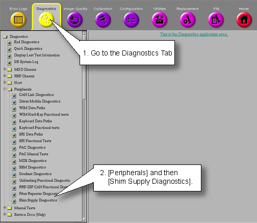
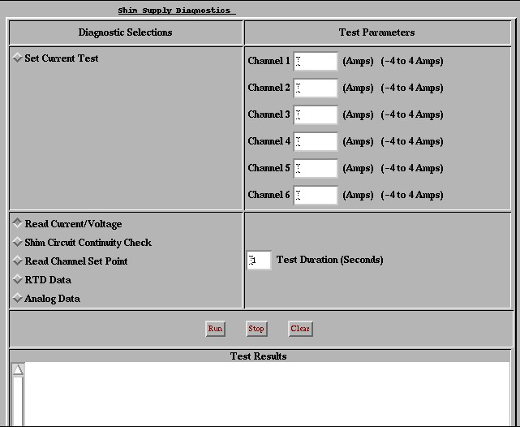

Operating Documentation
Direction 5133315-3, Rev# 14
Signa EXCITE HD 1.5T Service Methods
Module Version 2.0, Version Date 6/4/09
Operating Documentation |
| NOTE: | This document applies to the new style or Plexus High Order Shim Supply. The old style RRI High Order Shim Supply does not have this function. The Plexus supply can be identified by looking at the Rating plate which is on the rear of the supply. |
The Shim Supply Diagnostics are comprised of a series of tests that verify & display various Shim Supply values by communicating from the SCP to the Shim Supply via the CAN link. The tests are as follows:
Set Current Test
Read Current/Voltage
Shim Circuit Continuity Check
Read Channel Set Point
RTD Data
Analog Data
Start the Shim Supply diagnostics from the Service Desktop. See Illustration 1.
Illustration 1: Starting High Order Shim Supply Diagnostics.

Once started, refer to Illustration 2 for the following tests.
Illustration 2: Shim Supply Diagnostics GUI

This test takes any input current designated by the Operator between –4.000 amps and +4.000 amps, programs the Shim Supply to output the assigned current on each channel, and then queries the supply for the output and then displays this back to the user. The output current should match whatever the Operator designated for that channel.
| NOTE: | There is a 12 amp upper limit on the total amount of current that this supply can provide. If the power supply limit is reached, you may see an error code. Make sure the total current does not exceed 12 amps. |
Start the diags if not already started. See Section 1.
Input a current for each of the channels 1-6. (-4.000 amps to 4.000 amps).
After currents entered then select the “Set Current Test” radio button and press [Run] button.
Diag issues a command that sends the non-zero current values to the Shim Supply.
Diag waits, allowing the command to set the channels current.
Diag issues a command that instructs the Shim Supply to return the present voltage and current for each coil channel.
See Table 1 for an example of Diag displays the results.
Table 1: Set Current Test Example Iteration Output
Setting Current on Shim Supply
Waiting for Current Setting to stabilize.....
Shim Coil Current(A) Voltage(V)
Channel 1 0.1015 2.8149
Channel 2 -0.0003 -28.3381
Channel 3 -0.0100 -0.4873
Channel 4 -0.0113 0.3387
Channel 5 -0.0097 0.0048
Channel 6 -0.0097 0.0820 | ||
Start the diags if not already started. See Section 1.
Operator selects the [Read Current/Voltage] radio button, then presses the [Run] button.
Diag issues a command that instructs the Shim Supply to return the present voltage and current for each coil channel.
Diag displays the results. See Table 2.
Table 2: Read Current/Voltage Example Iteration Output
Shim Coil Current(A) Voltage(V) Channel 1 0.1015 2.8149 Channel 2 -0.0003 -28.3381 Channel 3 -0.0100 -0.4873 Channel 4 -0.0113 0.3387 Channel 5 -0.0097 0.0048 Channel 6 -0.0097 0.0820 |
This test ensures each channel can be set to the preset current (100mA) and that the channel (a) has the desired current; (b) has the proper polarity; and (c) is isolated (i.e. no crosstalk) from the other channels.
Start the diags if not already started. See Section 1.
Operator selects the [Shim Circuit Continuity Check] radio button, then presses the [Run] button.
Diag issues a command that turns the Shim Supply’s fault monitoring off.
Diag loops through each channel, setting a single channel to 100mA and all others to 0.0mA.
Diag reads currents from each channel and stores results.
Diag repeats this process for all the other channels.
Diag programs original currents back into Shim Supply.
Diag displays the results of test and identifies any failing channels. See Table 3.
Table 3: Shim Circuit Continuity Check Example Iteration Output
Shim Supply Diagnostic
Initializing Shim Supply
Setting 0.1 Amps on Channel 1
Setting 0.1 Amps on Channel 2
Setting 0.1 Amps on Channel 3
Setting 0.1 Amps on Channel 4
Setting 0.1 Amps on Channel 5
Setting 0.1 Amps on Channel 6
Actual Current on Channel (Amps)
Channel Set 1 2 3 4 5 6
1 0.083 -0.004 -0.010 -0.011 -0.010 -0.010
2 -0.010 0.000 -0.010 -0.011 -0.010 -0.010
3 -0.010 -0.004 0.084 -0.011 -0.010 -0.010
4 -0.010 -0.006 -0.010 0.082 -0.010 -0.010
5 -0.010 -0.006 -0.010 -0.011 0.084 -0.010
6 -0.010 -0.004 -0.010 -0.011 -0.010 0.080
Channel 1 is Functional and is Isolated from All other Channels
Channel 2 is OPEN and is Isolated from other Channels <- Failure here
Channel 3 is Functional and is Isolated from All other Channels
Channel 4 is Functional and is Isolated from All other Channels
Channel 5 is Functional and is Isolated from All other Channels
Channel 6 is Functional and is Isolated from All other Channels
|
This test simply queries the Shim Supply for the currents currently output on each channel and then it displays the results.
Operator selects the [Read Channel Set] Point radio button, then presses the [Run] button.
Diag issues a command that instructs the Shim Supply to return the present current for each coil channel.
Diag displays the results.
Table 4: Read Channel Set Point Read Channel Set Point
Shim Supply Diagnostic
Shim Coil Current(mA)
Channel 1 0
Channel 2 0
Channel 3 0
Channel 4 0
Channel 5 0
Channel 6 0
|
| NOTE: | Note: In this example all supplies outputting zero current. |
This test provides a read back of the present temperature on the RTD channels.
| NOTE: | Note: the RTD channels must be present. |
Start the diags if not already started. See Section 1.
Operator selects the [RTD Data] radio button, then presses the [Run] button.
Diag issues a command that instructs the Shim Supply to return the present temperatures on each of the RTD channels.
Diag displays the results. See Table 5.
Table 5: Rtd Data Example Iteration Output
RTD Input Degrees(C) RTD 1 0.000 RTD 2 0.000 RTD 3 0.000 RTD 4 0.000 RTD 5 0.000 RTD 6 0.000 RTD 7 0.000 RTD 8 0.000 |
| NOTE: | This example is intended to only show output format. Temperature values are not typical if RTD channels are present. |
Provides a read back of the present power supply and board temperature sensor values.
Start the diags if not already started. See Section 1.
Operator selects the[Analog Data] radio button, then presses the [Run] button.
Diag issues a command that instructs the Shim Supply to return the present power supply and board temperature sensor values.
Diag displays the results. See Table 6.
Table 6: Analog Data Example Iteration Output
Analog Input Value Board 5.0 Vcc 5.050 Board Temp (power) 28.0 Board Temp (RTD) 29.6 Heatsink Temp (inlet) 23.5 Heatsink Temp (outlet) 37.6 Board AGND Ref 0.000 Board 2.5 Vcc 2.493 |
| NOTE: | The Heatsink Temp (inlet) may show a value of 0.0. The inlet sensor has been removed from some systems. Therefore, a value of 0.0 is valid in test results for these systems. |